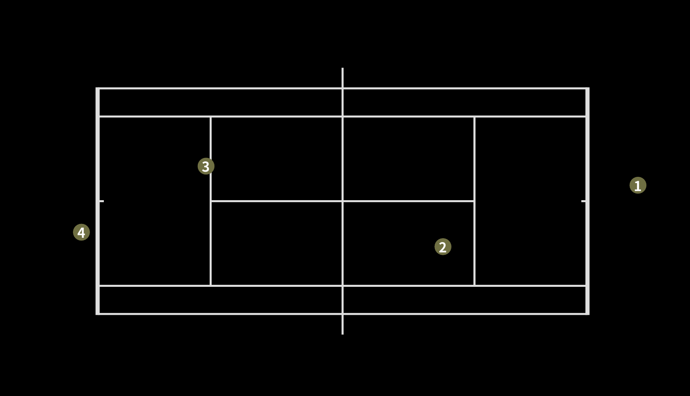

Tennis Court Registration

Tennis Registration v3
Prepare the environment
- DeepSORT environment
cd YOLOv9_DeepSORT
pip install -r requirements.txt
- YOLOv9 environment
cd yolov9
pip install -r requirements.txt
- UI environment (cpp-OpenCV & sysv_ipc)
cpp-OpenCV v4.7.0 in Ubuntu (Here is the tutorial)
pip install sysv_ipc
Demo
You can use the code below to simply run the demo.
python tennis_registration.py
After running all frames, you will see the result in the terminal. This is the position of every player in the image coordinate.
[[ 31.76 8.2214]
[ 22.868 10.646]
[ 11.693 7.4278]
[ 6.3028 9.9999]]
Or if you want to see the result, you can run the ui at the same time.
cd ui
./shr_tennis_ui
Then you will see like the image below.

Usage
You can use your own params to run the program with the code below.
python tennis_registration.py --video <str> --conf <float 0~1> --blur_id <int> --class_id <int> --cam_id <int>
Params
If you just simply test its performance in different perspectives, just change its video and cam_id params.
| Params | Function | Default |
|---|---|---|
| video | Path to input video or video stream (input ‘0’) | ‘./data/video_3.mp4’ |
| conf | confidence threshold | 0.50 |
| blur_id | class ID to apply Gaussian Blur | None |
| class_id | class ID to track | 0 |
| cam_id | camera perspective ID to track | 3 |
Supplements
① Stream Mode
If you need to use Stream Mode, pls apply this two code in tennis_registration.py after you connect the camera. Then input ‘0’ to video param. And don’t forget to change a correct camera index to calculate homography matrix. (You can rewrite cam_dict in object_tracking_stream to fix the correspondence between cameras and indexs)
# from YOLOv9_DeepSORT.yolov9.object_tracking_stream import person_track_stream
# person_track_stream(FLAGS)
Because I cannot connect my computer with cameras in the stadium, I commented them out while debugging the code. (If there are bugs when using Stream Mode, pls contact me…)
② Differences between object_tracking_stream and object_tracking
The code of video stream is in object_tracking_stream.py, and the code of video file is in object_tracking.py They use different methods to get frames: class PYLON_SHM and VideoCapture function in OpenCV.
③ Video samples and cam_id
The indexs of videos in the data folder are corresponding to the indexs of cameras.
video: video_0.mp4 -> cam_id: 0
video: video_1.mp4 -> cam_id: 1
video: video_2.mp4 -> cam_id: 2
video: video_3.mp4 -> cam_id: 3
References
Learn Homography: 相机标定系列（二）单应矩阵
Homography Applcation: OpenCV-Python单应矩阵（Homography Matrix）应用——更换广告牌